Дореволюционные фотографии
Lichtbilder
Фотографии предков и мест их жизни, в основном до 1917 года, семейные портреты, дома, усадьбы. Найдены в архивах и на генеалогических форумах.
-
Семья в городском парке Джаркента

-
Усадьба переселенца Никиты Зуева
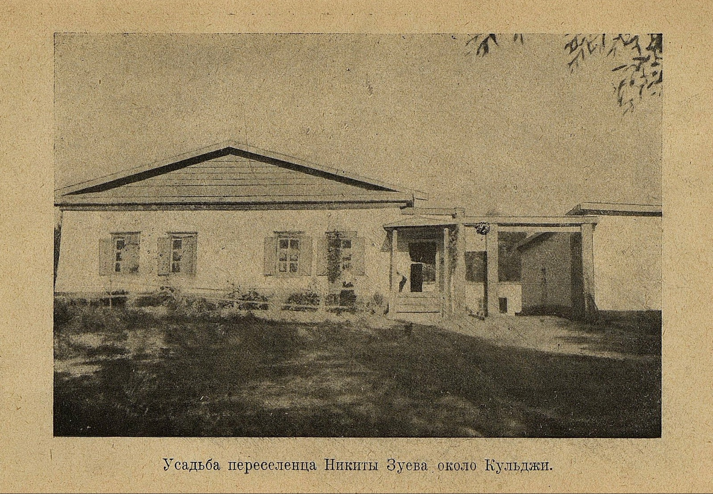
-
Казаки, основавшие станицу Голубевскую
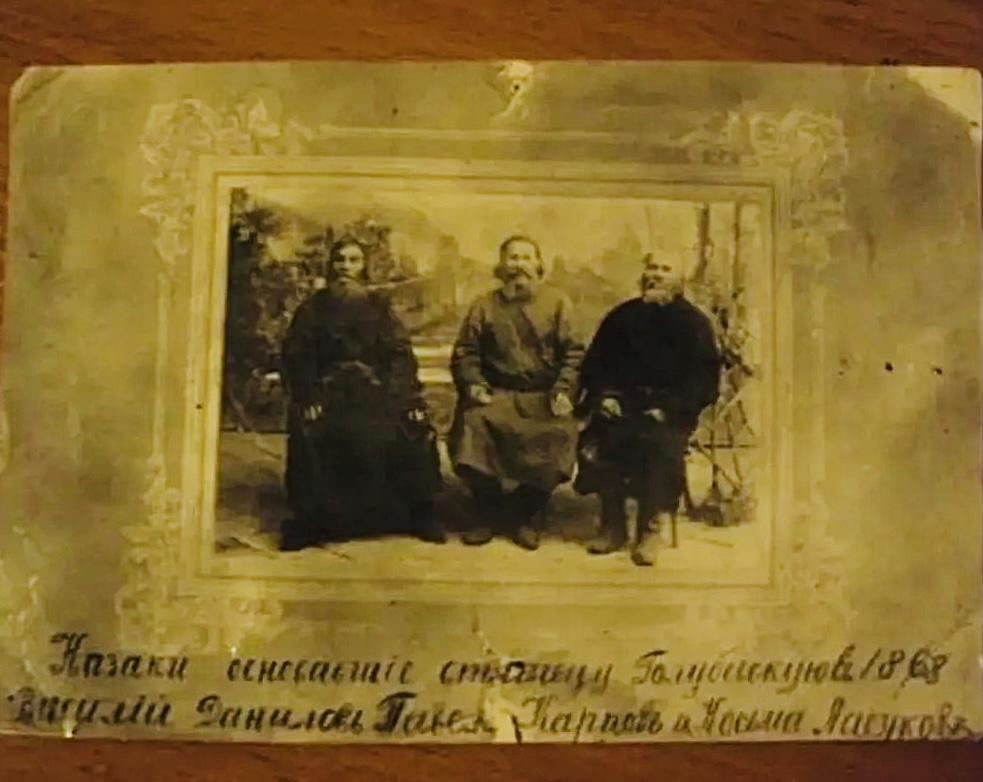
-
Вид окраины Джаркента
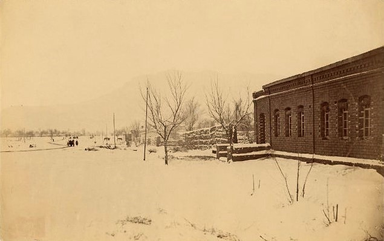
-
Первая православная церковь в Джаркенте
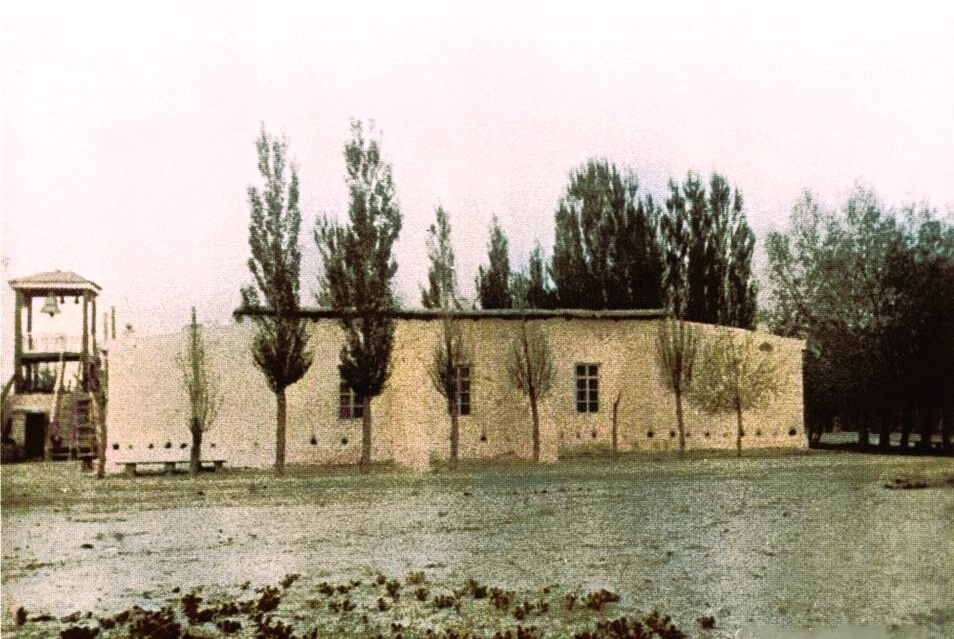
-
Бивуак 2-й сотни 1-го Сибирского казачьего полка близ Кульджи
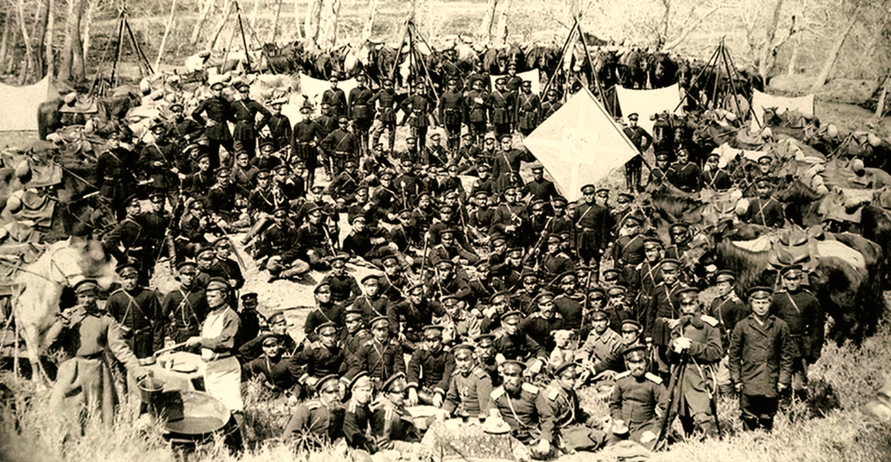
-
Казаки на привале
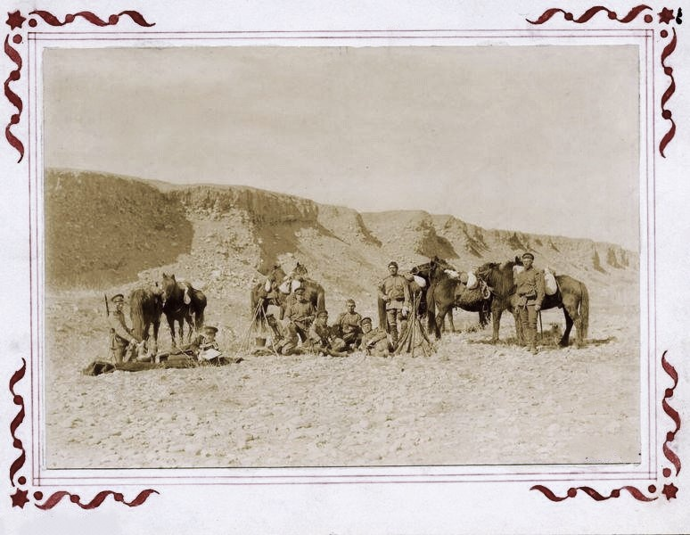
-
Казачья казарма в Хоргосе
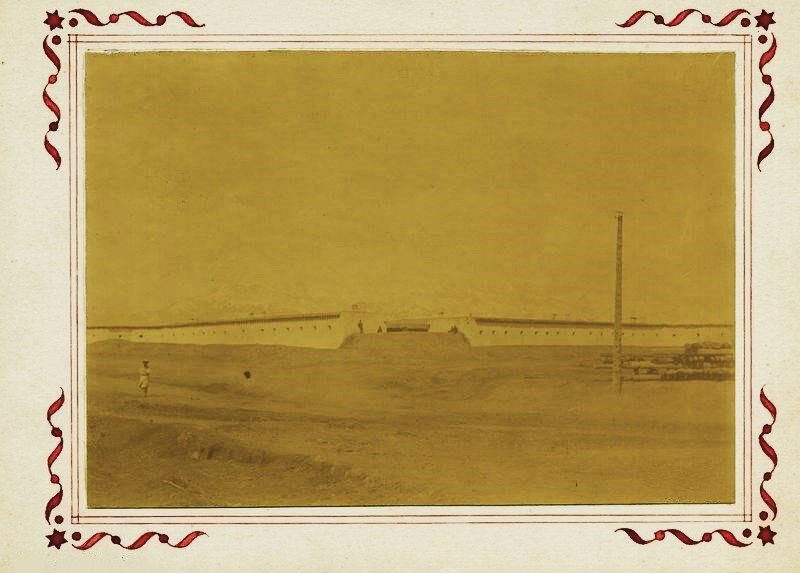
-
Ворота таранчинской мечети в Джаркенте
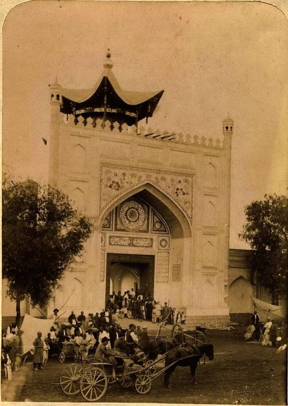
-
Пограничная застава близ Джаркента
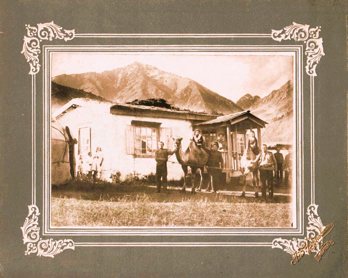
-
Семья военного из Джаркента
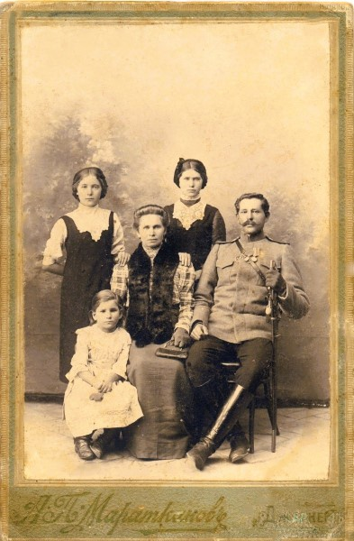
-
Казак-семирек на водопое
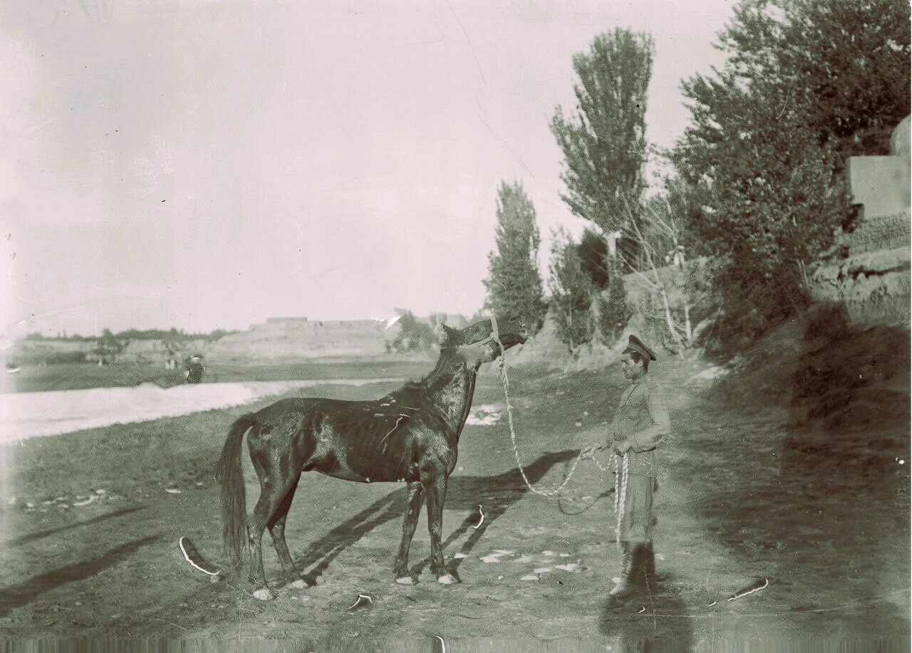
-
Строй сотни 1-го Семиреченского казачьего полка
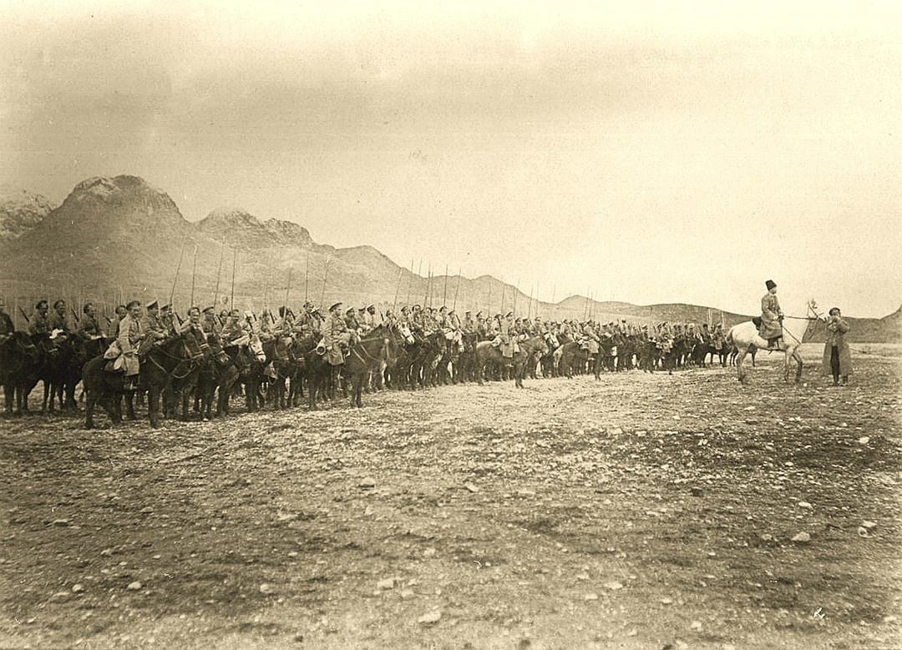
-
Сотрудники Семиреченского отдела Революционного военного трибунала
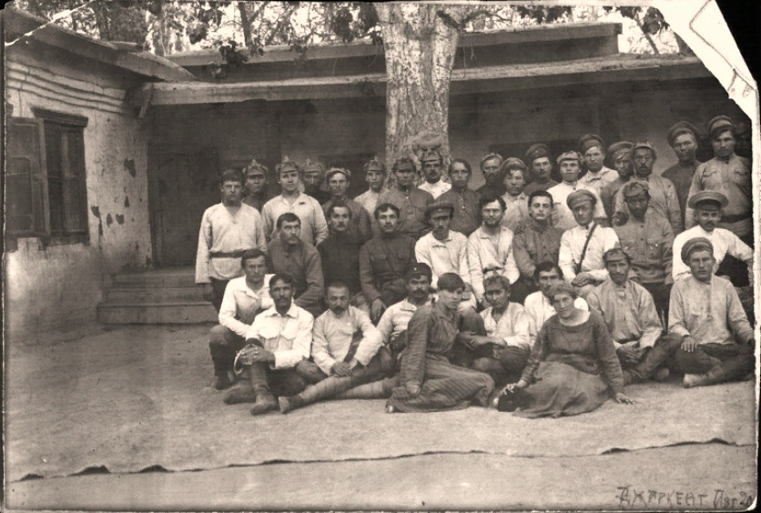
-
Здание бывшего Голубевского станичного правления
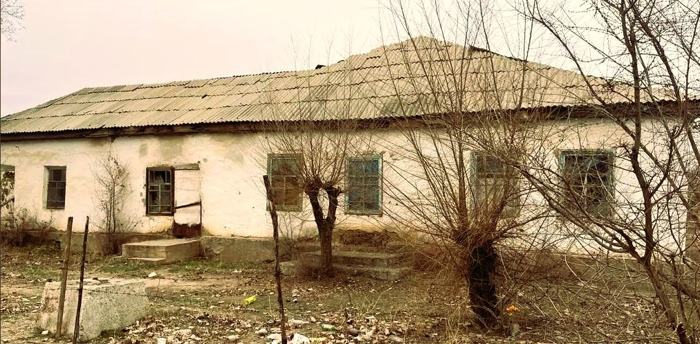